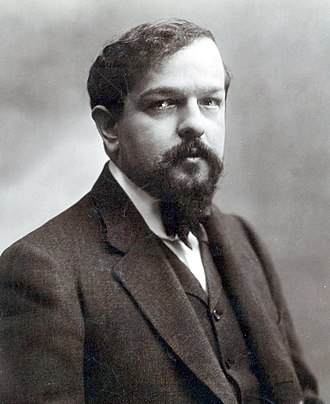

Claude Debussy[n 1] (French: [aʃil klod dəbysi]; 22 August 1862 – 25 March 1918) was a French composer. He is sometimes seen as the first Impressionist composer, although he vigorously rejected the term. He was among the most influential composers of the late 19th and early 20th centuries.
Born to a family of modest means and little cultural involvement, Debussy showed enough musical talent to be admitted at the age of ten to France's leading music college, the Conservatoire de Paris. He originally studied the piano, but found his vocation in innovative composition, despite the disapproval of the Conservatoire's conservative professors. He took many years to develop his mature style, and was nearly 40 when he achieved international fame in 1902 with the only opera he completed, Pelléas et Mélisande.
Debussy's orchestral works include Prélude à l'après-midi d'un faune (1894), Nocturnes (1897–1899) and Images (1905–1912). His music was to a considerable extent a reaction against Wagner and the German musical tradition. He regarded the classical symphony as obsolete and sought an alternative in his "symphonic sketches", La mer (1903–1905). His piano works include two books of Préludes and two of Études. Throughout his career he wrote mélodies based on a wide variety of poetry, including his own. He was greatly influenced by the Symbolist poetic movement of the later 19th century. A small number of works, including the early La Damoiselle élue and the late Le Martyre de saint Sébastien have important parts for chorus. In his final years, he focused on chamber music, completing three of six planned sonatas for different combinations of instruments.
With early influences including Russian and far-eastern music, Debussy developed his own style of harmony and orchestral colouring, derided – and unsuccessfully resisted – by much of the musical establishment of the day. His works have strongly influenced a wide range of composers including Béla Bartók, Olivier Messiaen, George Benjamin, and the jazz pianist and composer Bill Evans. Debussy died from cancer at his home in Paris at the age of 55 after a composing career of a little more than 30 years.
Debussy was born on 22 August 1862 in Saint-Germain-en-Laye, Seine-et-Oise, on the north-west fringes of Paris.[7][n 2] He was the eldest of the five children of Manuel-Achille Debussy and his wife, Victorine, née Manoury. Debussy senior ran a china shop and his wife was a seamstress.[2][9] The shop was unsuccessful, and closed in 1864; the family moved to Paris, first living with Victorine's mother, in Clichy, and, from 1868, in their own apartment in the Rue Saint-Honoré. Manuel worked in a printing factory.[10]